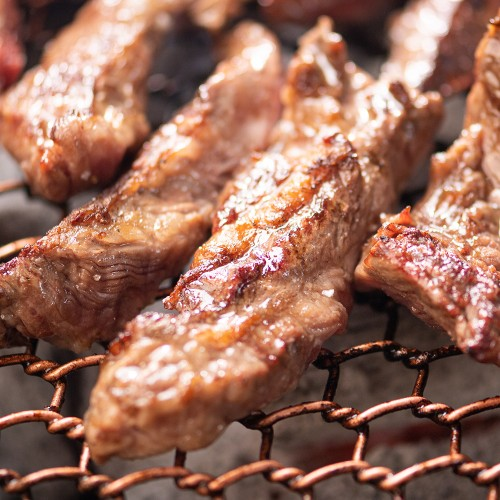
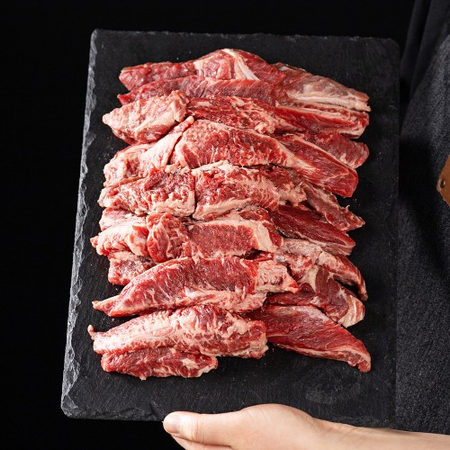
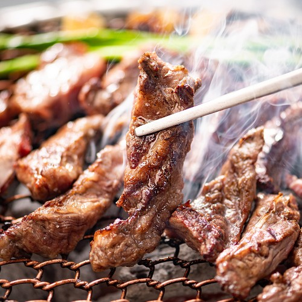

이 포스팅은 네이버 쇼핑 커넥트 활동의 일환으로, 판매 발생 시 수수료를 제공받습니다.
대한민국농수산 갈비살 1kg, 가을 캠핑 소고기 구이 준비
가을 캠핑 메뉴를 고기 구이로 정했다면, 이번에는 소갈비살도 후보에 올려보세요. 한 팩을 얼마나 준비할지 정해두면 다른 장보기 목록도 정리하기 쉬워요.
대한민국농수산 갈비살 1kg의 10월 6일 표시 가격은 38,900원이에요. 상품가격 기준 100g당 3,890원으로 비교할 수 있어요.
💚 갈비살 1kg 현재 가격·구성 보기(웃는 스티커)
1. 소갈비살 구이

판매자 제공 상품사진 · 구성 및 옵션 예시 · 클릭하면 원본 사진판매자는 호주산 소갈비살을 손질해 1kg으로 소개하고 있어요. 소고기 구이용으로 부위가 분명한 상품을 찾는 분에게 선택 이유가 있죠.
원육 사진과 구이 예시를 같이 보면 불판에 올릴 모습을 떠올리기 쉬워요. 캠핑에서 준비할지 집에서 팬에 구울지, 이번 식사의 메인을 먼저 정해보세요.
(고기 메뉴 하나를 정하면 장보기의 절반은 잡힌 기분이죠.)
2. 1kg 활용

판매자 제공 상품사진 · 구성 및 옵션 예시 · 클릭하면 원본 사진고기는 한 팩 가격과 중량을 함께 보면 비교가 편해요. 이 상품은 1kg이라 식사 계획에 맞춰 먹을 양을 정할 수 있어요.
한 번에 나눠 먹을지 여러 끼에 쓸지에 따라 수령 후 보관 계획도 잡아두면 돼요. 실제 결제금액은 배송비와 선택 옵션까지 함께 보면 깔끔하게 비교할 수 있고요.
💚 1kg 갈비살 옵션·배송 조건 보기3. 캠핑 식탁

판매자 제공 상품사진 · 구성 및 옵션 예시 · 클릭하면 원본 사진버섯이나 구이 채소를 곁들이면 소갈비살을 중심으로 캠핑 식탁을 계획할 수 있어요. 복잡한 양념 메뉴를 여러 가지 준비하기보다 고기 구이에 집중하고 싶은 날에 맞는 방향이죠.
다음 캠핑에서 소고기를 구워 먹을 계획이라면 아래에서 현재 갈비살 구성을 살펴보세요. 집에서 가족 식사용으로 고를 때도 중량과 부위를 같이 보기 좋아요.
💚 대한민국농수산 갈비살 상세·현재 혜택 보기#대한민국농수산 #갈비살1kg #캠핑고기 #소갈비살 #가을캠핑